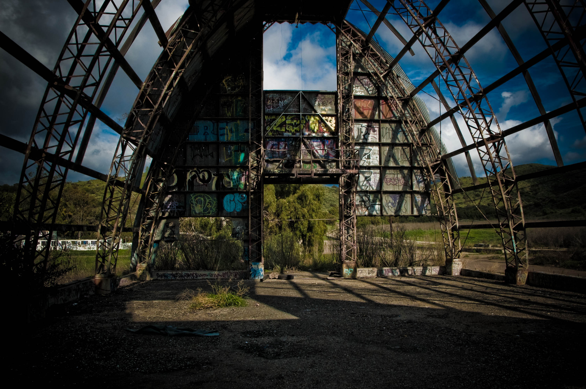

This page is a guide to learning the piece Ghosts on a tapping Instrument such as the Chapman Stick or the acoustic Dragonfly DFA.
There is a ♪ score/tablature ♪ and fretboard diagrams to help you learn the song.
The melody of this song is a re-imagining of the song 'Ghosts' by Albert Ayers It has a more straight up rhythm than the original. and has an americana feel with the addition of a slower tempo.
Some spare bass accompanyment with a few different chords here and there and becomes a different feeling song all together.
xxx
-mike hoegeman